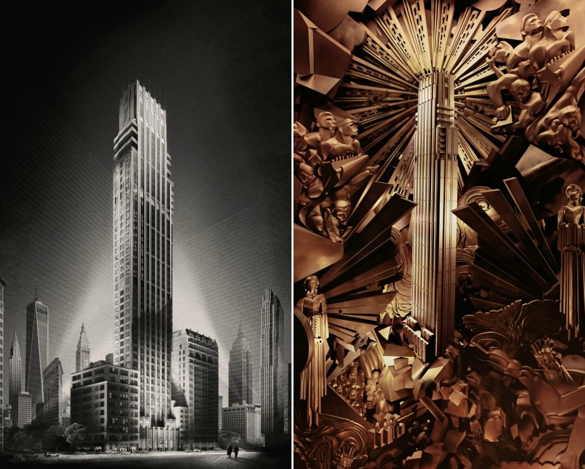

Rockefeller Group, the developer behind Rockefeller Center, is currently designing their first New York residential building, Rose Hill. The 600-foot condo tower will be located at 30-36 East 29th Street in the Rose Hill section of Manhattan’s east side. The location of the building is special; it is grounded in the 130-acre Rose Hill Farm estate owned by the Watts family, beginning in 1747. After the Revolutionary War, the farm was rebuilt from damage caused by the British Invasion and was later sold in 1790.
This is just one of many new artful buildings in the city that call back to a time of forward thinking in the early 20th century. The Fitzroy in Chelsea, along with 111 West 57th Street in Midtown are just a couple of examples of modern art deco.
Designed by CentraRuddy, the tower is heavily influenced by the architecture style of Rockefeller Center and will have a similar matching facade. Although the details of the project have not been made public, the project has already started and will soon be climbing high in the sky. Rockefeller Group has not announced the amenities, but public record shows permits made for a gym, pool, squash courts, bike parking, and a tenant terrace on the 34th floor.